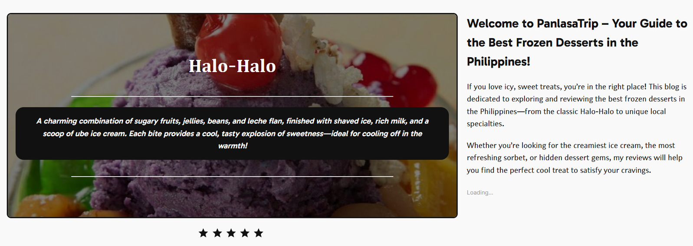
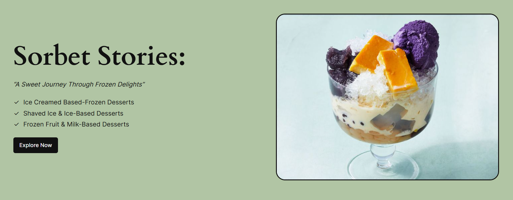
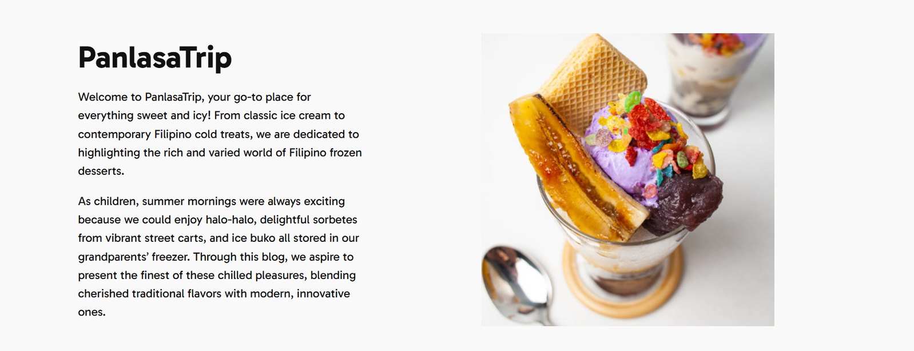

The Objective
"PanlasaTrip is a specialized WordPress-based blog platform dedicated to exploring and showcasing traditional Filipino frozen desserts. The objective was to build a content-rich environment that provides curated articles, detailed recipe guides, and cultural insights into popular treats like Halo-Halo and Buko Pandan, focusing on high-readability and efficient content organization."
System Architecture
WordPress Engine
A custom-themed CMS architecture leveraging PHP and MySQL for flexible content and metadata management.
Content Taxonomy
Efficient organization using categories and tags to group dessert types, recipe guides, and cultural insights.
Media Optimization
Implementation of lazy-loading and optimized formatting to serve high-quality culinary imagery with minimal latency.
User Engagement
Integrated comment systems and interaction loops designed to build a community around Filipino frozen desserts.